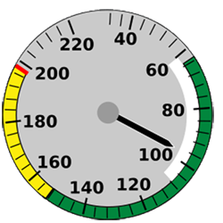
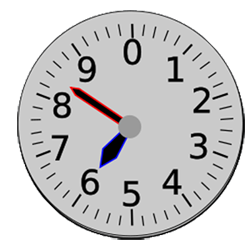

Instrumenter Svingeindikatoren viser at flyet ikke svinger, gyrokompasset viser at flyet flyr mot nord, og stigehastighetsmåleren viser en stigning på 1000 fot per minutt.
Flytid - Programmet beregner flytid ved hjelp av avstand og fart. (Fart oppgis i knop, og avstand oppgis i kilometer)Svaret er angitt i timer og minutter.
Høyde - Programme beregner også høyde i meter ved oppgitt høyde i fot (1 fot = 30,48 cm).
Klikk på hastighetsmåleren for å beregne tid.
Klikk på høydemåleren for å omregne høyder i fot til meter.

